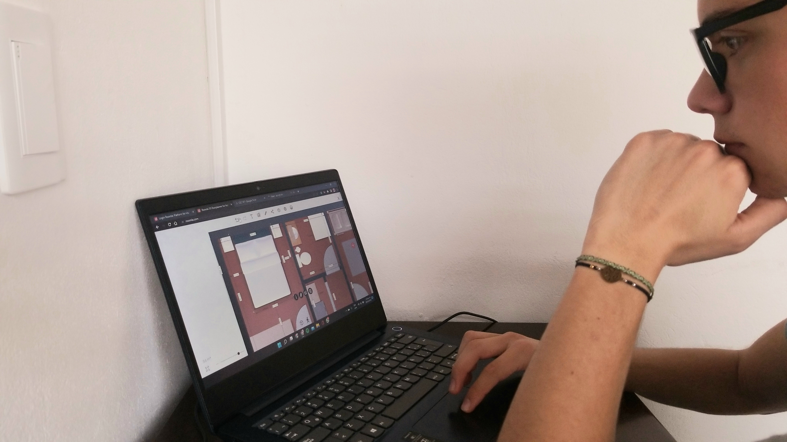
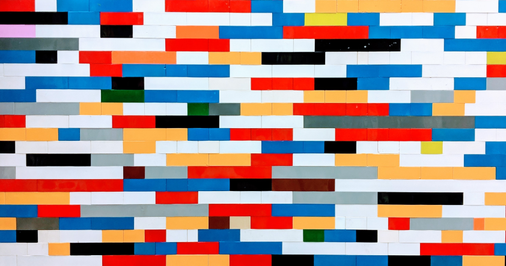

Los planos son realizados mediante la herramienta digital Roomle, la cual permite crear un plano ya sea en 2D o 3D según las necesidades. Esta plataforma permite crear los planos al suministrarle al sistema las adecuadas mediciones de lo que se desea realizar y con las características que se busca estén presentes.

PLANOS DE LA CASA
Diseño de los planos del hogar en 3D o en 2D
El arquitecto
Santiago Zambrano Iregui
 “Los materiales y el tipo de construcción,
permiten diseños únicos e innovadores según
las necesidades de los clientes”
-Santiago Zambrano
Nuestra propuesta
La casa diseñada es una casa de 8 metros de ancho por 8 metros de largo, generando una vivienda de 64 metros cuadrados de área construida y alrededor de unos 55 metros cuadrados de área privada. Consta de 2 habitaciones, un baño, un pequeño cuarto de ropas, una cocina abierta y un espacio amplio de sala-comedor donde caben perfectamente un comedor de 4 puestos o una barra, un sofá, una mesa de centro en la sala y dos poltronas. El baño tiene un área aproximada de 5 metros cuadrados, la habitación principal es de alrededor de 10 metros cuadrados, la habitación secundaria es de alrededor de 9 metros cuadrados, la zona de lavandería cuenta con 1.5 metros cuadrados aproximadamente y el área social, incluyendo cocina, comedor y sala es de alrededor de 31 metros cuadrados. Es importante mencionar que las habitaciones, el baño, la zona de lavandería y la cocina cuentan con espacios de almacenamiento contemplados en el costo de la vivienda y entregados al final de la construcción de la misma.
Area
Al estar basada en los parámetros de una VIS, tener al menos un área de 42 metros cuadrados.
Altura
El diseño tiene en cuenta los parámetros de construcción colombiana donde la casa debe contar con alturas de 2.30 metros
Ventanas
El modelo inicial cuenta con dos ventanas de 125 centímetros por 105 centímetros ubicadas en el frente, asumiendo que será construida en un conjunto con características VIS.
Norma colombiana
Recuerda
Todo es modular, se puede rediseñar.... y personalizar...
